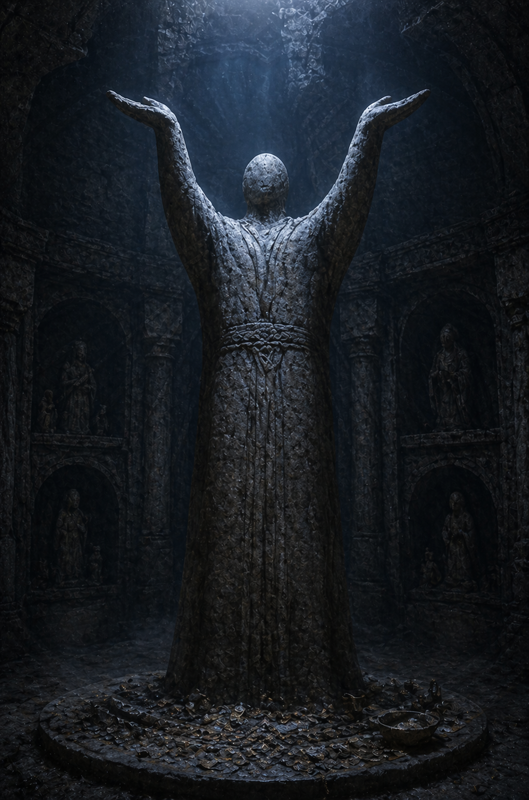
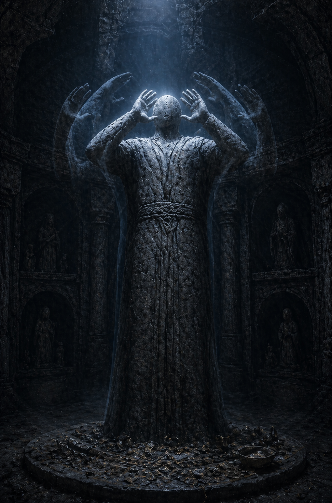
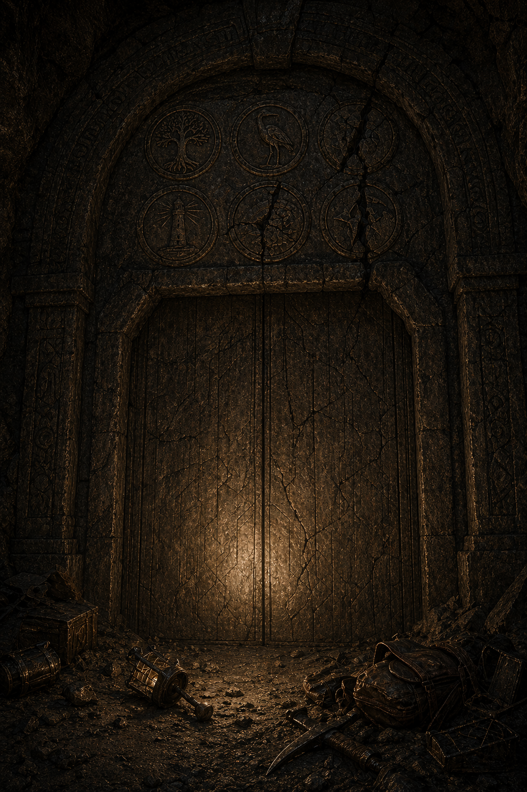

Session 7 — Visual Reference
Scroll through and show players as each set piece is reached. Images are landscape format — full screen on iPad works well.
Save generated images to img/scenes/session-7/ using the filenames below. They will appear here automatically once saved. Generate using the prompts at Image Generation Prompts.
Space 2 — The Outer Hall
The Statue in Supplication

Show when: Players first enter the Outer Hall and you describe the central figure with arms raised.
Space 2 — The Outer Hall (Retreat)
The Statue in Fear

Show when: The crew passes through the Outer Hall on the retreat, after taking the coin. Call back to the statue — show this before describing the fingertip shift.
Space 2 — The Outer Hall
The Puddle

Show when: Players examine the puddle. Show before anyone commits to stepping in.
Space 4 — The Watch Chamber
The Observer

Show when: It drops from the ceiling. Show this image, then pause. Let it land before you describe anyone's reaction.
Space 5 — The Pump Corridor
The Ruptured Pump

Show when: Players enter the corridor and you describe the ruptured pump. Show before or as you describe the ghost echo. Let Flint's player sit with it.
Space 6 — The Door Chamber
The Compact Door

Show when: Players first see the door — before the cultist encounter resolves, as Alaric notices the tree seal in the arch.
Space 8 — The Bay Chamber
The Bay Chamber

Show when: Players step through Flint's door into the Bay Chamber. Show this as your establishing description — the membrane wall, the coin, the still heavy water. Hold here before anyone moves.